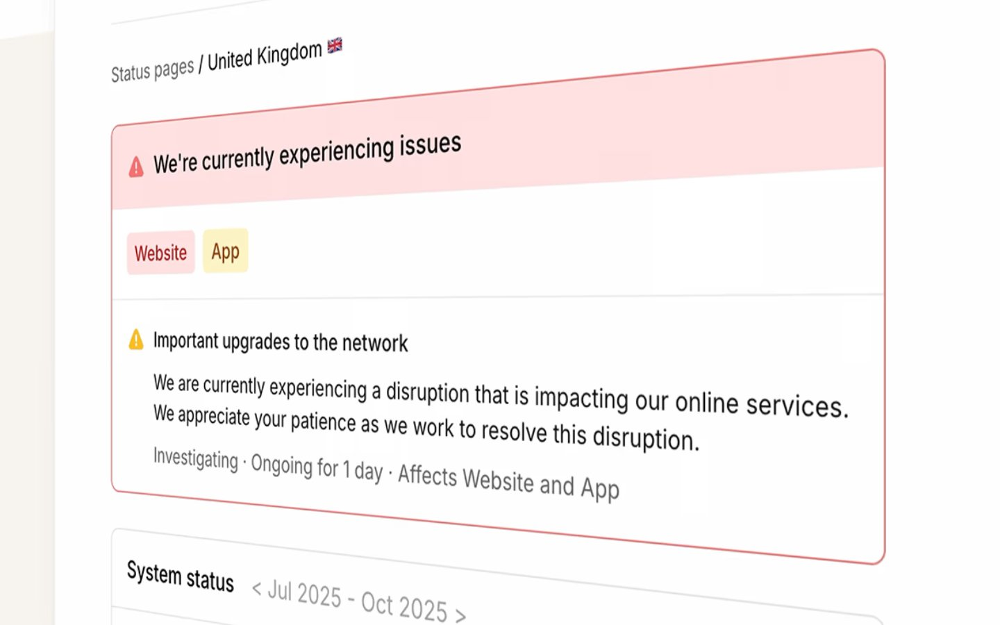

Incident 的 Design.md 主题展示，围绕运营系统、安全合规、运营监控、数据仪表盘组织页面。
Explore Incident's light SaaS design system: Canvas White #ffffff, Platinum Mist #efefef colors, Times, Arial typography, and DESIGN.md for AI agents.

#efefef: #efefef#000000: #000000#ffffff: #ffffff#161618: #161618#ff492c: #ff492c#dadada: #dadada#cccccc: #cccccc#f25533: #f25533#e4d9c8: #e4d9c8#0770e3: #0770e3#f1641e: #f1641e#ff66f4: #ff66f4fontFamily: [object Object]fontSize: [object Object]lineHeight: [object Object]letterSpacing: [object Object]control: 6pxcard: 6pxpreview: 6pxmobileGutter: 16pxouterGutter: 24pxsection: 32px